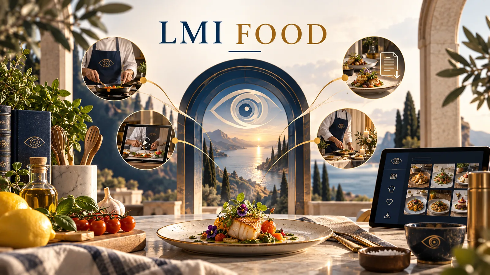

Restaurant en ligne
Plats du quotidien, créations contemporaines, signatures sénégalaises, petites faims et boissons maison dans une carte simple à parcourir.
RepasMaison culinaire contemporaine · saveurs universelles · signatures sénégalaises
LMI FOOD réunit restaurant, traiteur, abonnements repas, épicerie, jus faits maison, livres et e-books, bibliothèque premium de recettes, cours en ligne et cours à domicile dans une expérience culinaire cohérente, chaleureuse et exigeante.
Saveurs choisies, présentation soignée.

LMI FOOD
Cuisine, épicerie, repas réguliers et formats de réception composent un même univers. Les spécialités sénégalaises y occupent une place identifiable, au sein d’une proposition ouverte aux saveurs et aux usages contemporains.
Plats du quotidien, créations contemporaines, signatures sénégalaises, petites faims et boissons maison dans une carte simple à parcourir.
RepasJus faits maison, sauces, bases de cuisson, céréales, essentiels et compositions gourmandes pour la maison ou le partage.
MaisonDes formats réguliers pensés pour particuliers, bureaux et équipes. Les périodes d’ouverture sont précisées au moment de la demande.
RégularitéRéceptions, événements et formats à partager peuvent faire l’objet d’une demande adaptée au besoin.
ÉvénementsSaveurs & signatures
Petites faims, boissons maison et préparations de caractère donnent une première lecture de l’univers culinaire. Les informations détaillées sont présentées uniquement lorsqu’elles ont été vérifiées.
Des formats à partager ou à savourer seuls, avec une information produit destinée à rester claire sur la composition, les allergènes et les conditions de service.
Boissons maison
Bissap, gingembre, bouye, tamarin et compositions de saison prolongent la carte par une identité fraîche, généreuse et lisible.
Au-delà du repas
Recettes, livres et formats de transmission prolongent l’expérience culinaire au-delà du repas.
Recettes et gestes culinaires peuvent se prolonger par des formats de transmission dédiés.
Des moments collectifs pensés pour découvrir une technique, une boisson, un produit ou une famille de saveurs.
Recettes, mémoire culinaire et contenus de transmission réunis dans des formats éditoriaux cohérents.
Relation client
Confiance
Composition, allergènes, prix, service et délai accompagnent la décision lorsqu’ils s’appliquent à l’offre choisie.